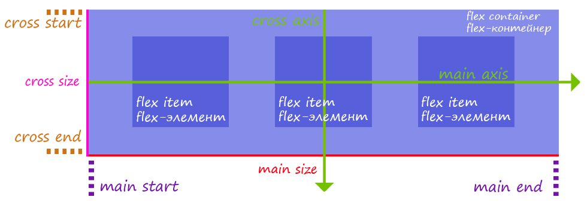

Зачем нужен Flexbox?
Модуль Flexbox Layout (Flexible Box) направлен на то чтобы предоставить более эффективный способ расположения, выравнивания и распределения свободного пространства между элементами в контейнере, даже когда их размер заранее неизвестен и/или динамичен.
Основная идея гибкой (flex) разметки заключается в том, чтобы предоставить контейнеру возможность изменять ширину/высоту и порядок своих элементов, для того чтобы наилучшим образом заполнить доступное пространство (в основном для размещения на всех типах и размерах экранов). Flexbox контейнер расширяет элементы чтобы заполнить свободное пространство или сжимает их чтобы избежать переполнения.
Основы Flexbox и его терминология
Flexbox является модулем и содержит целый набор свойств. Одни свойства устанавливаются контейнеру (родительскому элементу, который называется "flex-контейнер"), а другие дочерним элементам ("flex-элементы").
В отличии от блочных систем компоновки, основанных на блочных и строковых направлениях, Flexbox основан на "flex-flow" направлениях.

- main axis - это основная ось flex-контейнера, вдоль которой расположены flex-элементы. Она зависит от свойства flex-direction;
- cross axis - это ось перпендикулярная основной оси, которая называется "поперечной" осью. Её направление зависит от направления основной оси;
- main-start | main-end - flex-элементы размещаются внутри контейнера, начиная с main-start и заканчивая main-end;
- cross-start | cross-end - flex-элементы размещаются внутри контейнера, начиная с cross-start и заканчивая cross-end;
- main size - ширина или высота flex-элемента, в зависимости направления основной оси (main axis);
- cross size - ширина или высота flex-элемента, в зависимости направления поперечной оси (cross axis);